官方盖章的「最美小镇」新成员前来报到~
法国旅游发展署 ·

>>
最有含金量的「最美小镇」评选
依旧在9月尘埃落定，
今年得到官方盖章的新成员新增4位，
从提交申请资格到获得认证，
能经受住考察团队检验的小镇除了美得大杀四方，
还要德才兼备，
历史古迹和环境一样都不能落下。
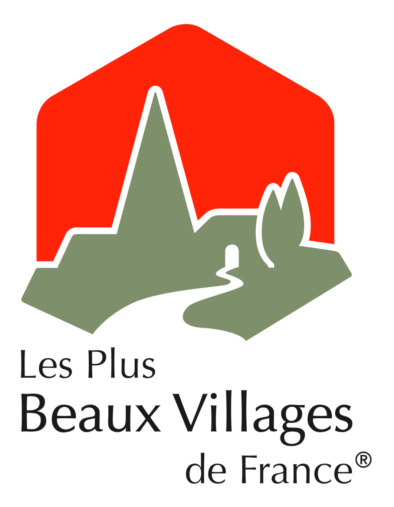
©Les Plus Beaux Villages de France
补充一点，如果提交申请后落选，至少6年之后才能重新申请，在如此严苛的“补考”规定下选出的最美，绝对值得收藏~
法小旅下面就为大伙揭晓
今年脱颖而出的优秀考生
（剧透一下：都在南方，wow）
昂特勒沃
Entrevaux
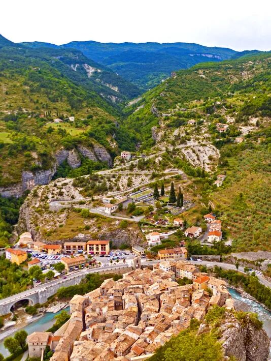
©iStock-sphraner
从尼斯挣脱地中海的怀抱，
向着瓦尔河蜿蜒流过的山谷出发，
约1小时左右车程便可到昂特勒沃，
一个卧于山海之间的中世纪古城。
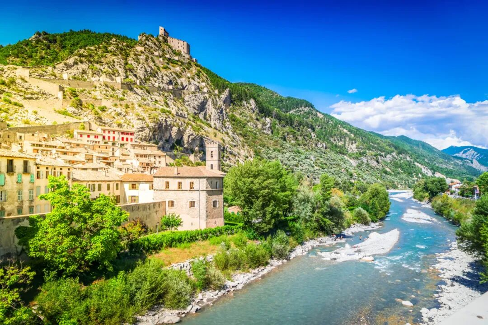
©iStock-neirfy
早在古罗马时期，这里就是主要的军事要塞，在1536年的西班牙国王查理五世带领军队入侵普罗旺斯时，昂特勒沃凭借攻守自如的地理优势，得到了法王弗朗索瓦一世的认可。他将这里定为自由的皇家城镇，享有特权和免税待遇，如今吊索悬起的皇家城门 (Porte Royale) 内还有国王颁布的通告，记载着曾经那段至高无上的荣耀。
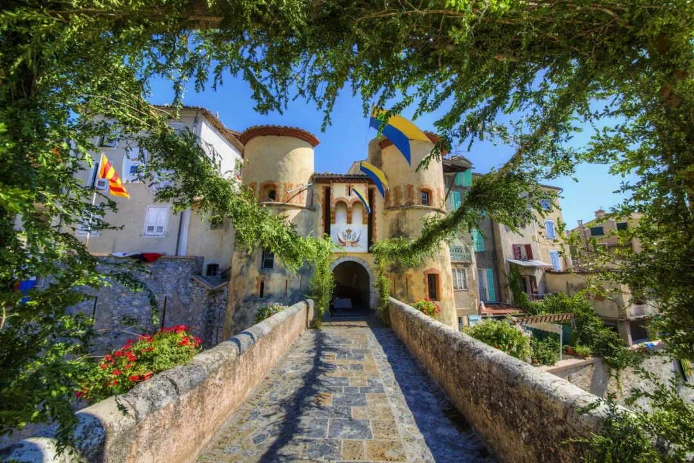
©iStock-RolfSt
直到1860年尼斯被划归到法国疆土之前，昂特勒沃一直坚守着东南边境。
古城引以为傲的山顶堡垒建于17世纪，出自路易十四的御用军事工程师兼元帅沃邦之手，易守难攻且坚不可摧。沿着800 米长的斜坡攀到156米的山岩顶部，下面便是整个村庄的全貌景色：茂密的橄榄树林、交错相间的瓦片，缓缓流过的瓦尔河，一览无余。
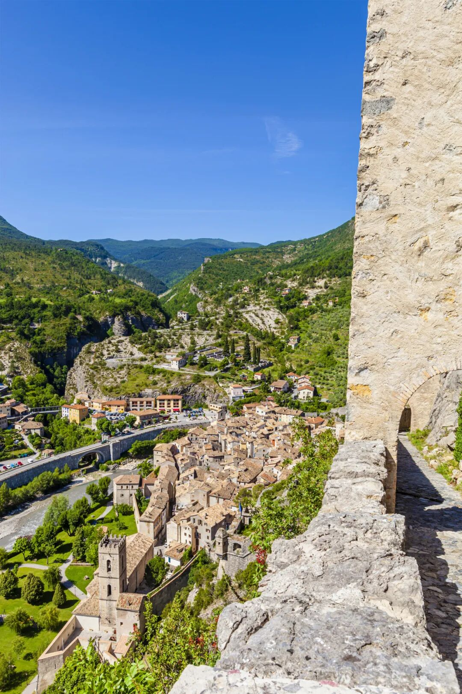
©iStock-Orietta Gaspari
第一次世界大战期间，这座固若金汤的军事要塞被用作德军的惩戒监狱，时光缱绻，褪去硝烟的古城内也只留下了岁月安然。
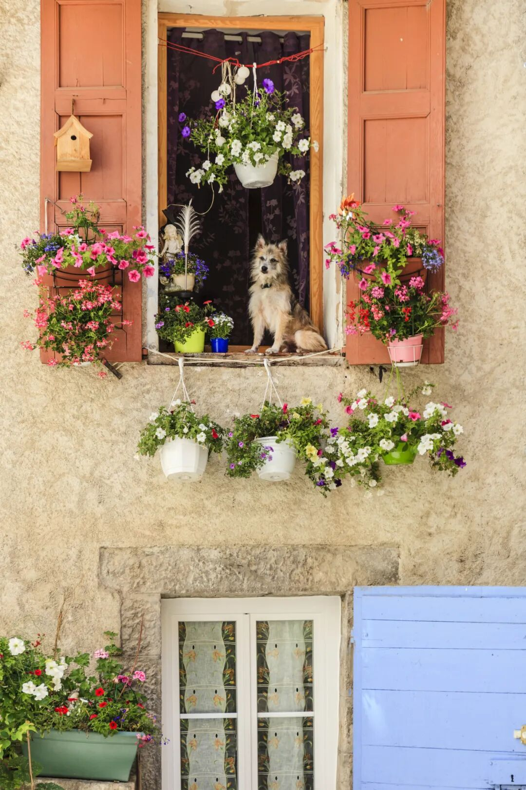
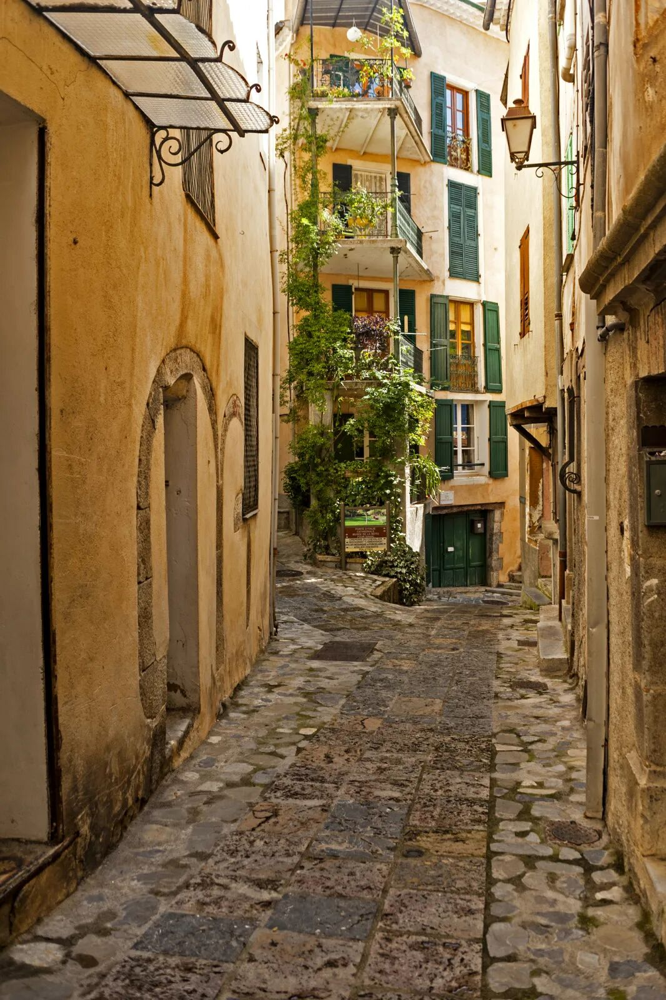
©iStock-Flavio Vallenari, phraner
来昂特勒沃前，建议搭乘那可爱又清新的红色松果小火车 (Train des Pignes)，在百年前的铁轨上响起的鸣笛声，沿途领略从地中海到阿尔卑斯之间的壮丽风光。
©iStock-sphraner
伴着窗外奔腾的河流、
险峻的山谷，清澈的湖水，
将南法最本真的时光一并收藏。
索尔日
Saorge
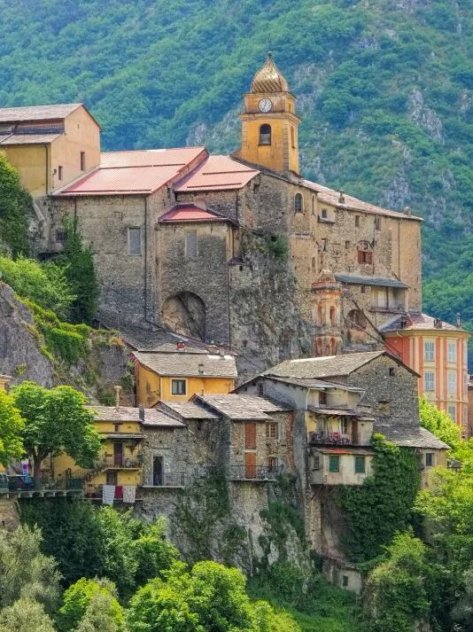
©iStock-LianeM
索尔日小镇坐落于
法国南部与意大利交界的不远处，
罗亚峡谷 (la Vallée de la Roya) 的上方，
历史上曾有三座城堡防守，
号称坚不可摧的 "罗亚之锁"。
小镇还曾是南部盐道上的中转站，顺着险峻的山路可以望见那些嵌在岩壁上鳞次栉比的房屋，在青山间美得超凡脱俗。
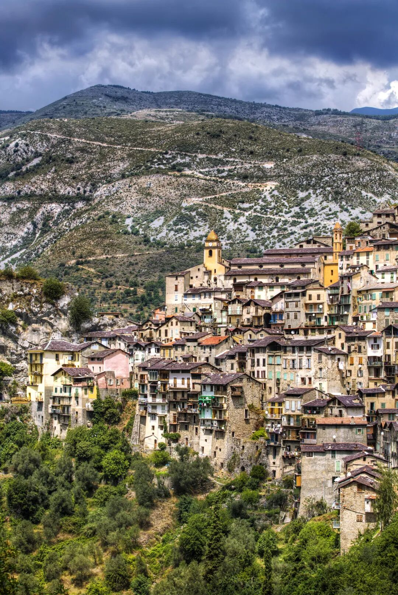
©iStock-RolfSt
这里大部分建筑历史可追溯到 15—17世纪，红黄相间的配色风格颇具东方古韵，小镇因此也落得个 "藏族村落 "的美名，迷宫般的窄街和拱形通道随处可见，老旧而斑驳的墙壁刻满了深沉与沧桑。
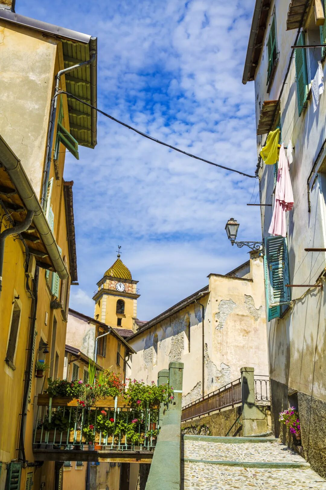
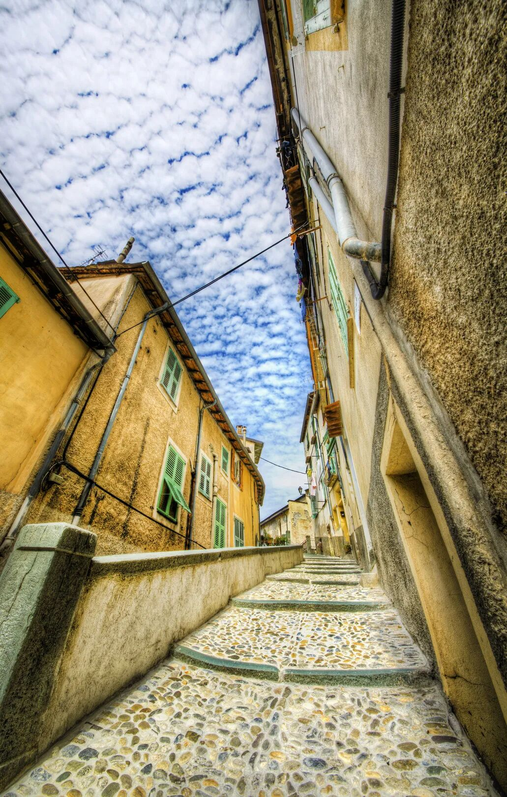
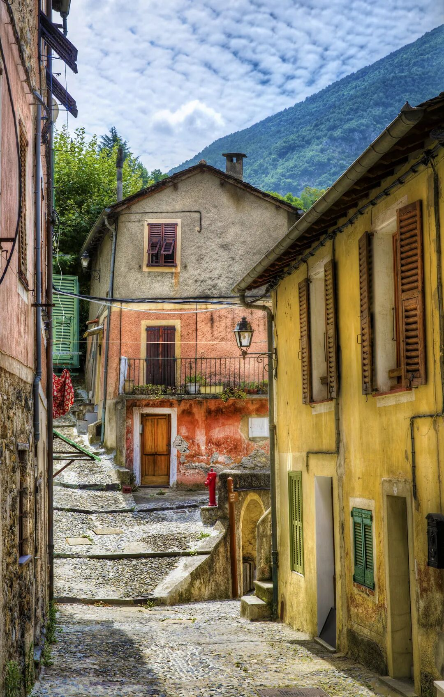
©iStock-RolfSt
圣索维尔教堂 (L'église Saint-Sauveur) 建于1633年，教堂内部及西面的钟楼则是在17世纪修缮的，曾经镇上各大家族开会时都会聚在此处，你可以从各个角度望见教堂，这里的居民指路也是以它为标记的。
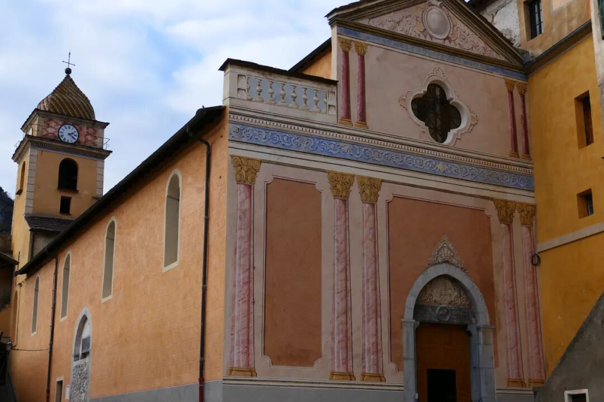
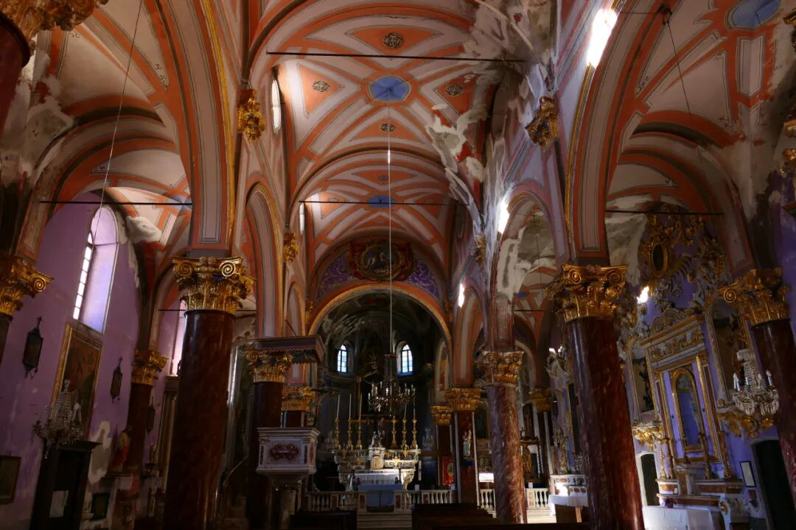
©iStock-Yvan Tessier
自然纯朴与世隔绝的是小镇的性格特点，
没有熙攘的人群，
街边小酒馆里都是晒太阳闲话家常的本地人。
庞达热奈
Penne-d’Agenais
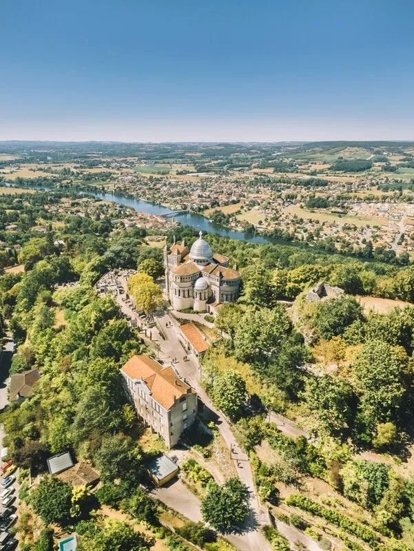
©Tourisme Fumel
宛如画中仙境的小村庄庞达热奈，
静谧地伫立于加龙省的怀抱中，
与洛特河轻轻相依，
村庄的名字据说来自凯尔特语中的
"山脊Penn "一词。
整个村子给人第一印象就是沉静迷人，穿梭在倾斜贯通的小径上，畅快且松弛，在转角处与建筑融为一体的露天咖啡馆享受阳光，不知不觉也就忘记了时间。
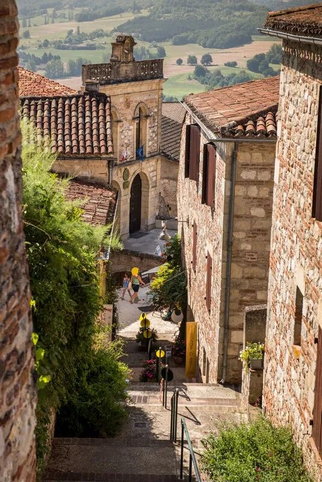
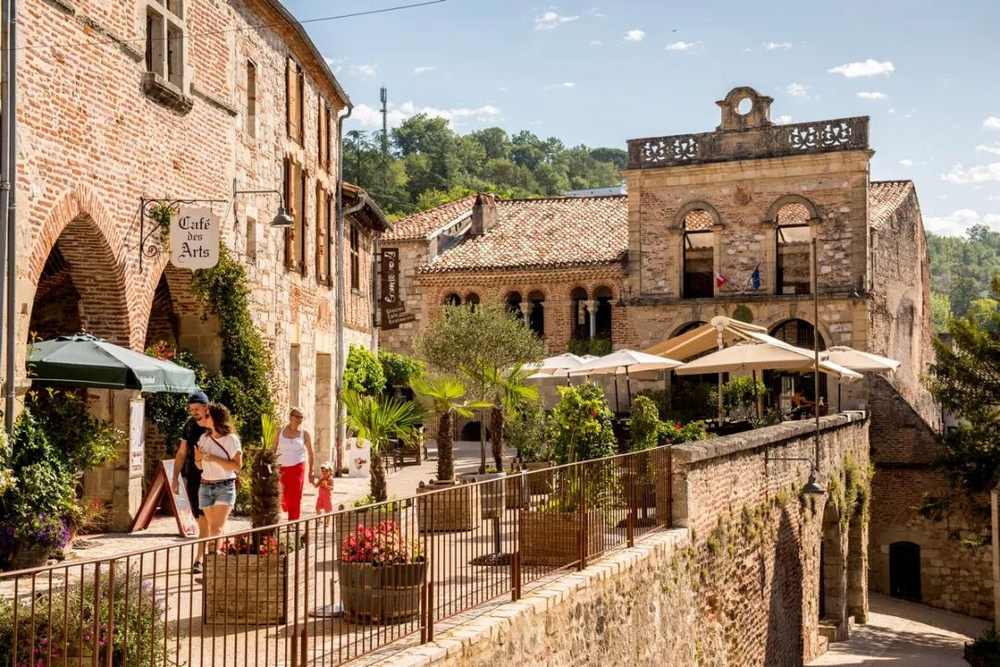
©Tourisme Fumel
著名的朝圣者之路便经过此处，漫步到佩拉古德圣母大教堂 (Basilique Notre-Dame de Peyragude) 附近，许多虔诚的圣徒便是从这里踏上圣地亚哥-德孔波斯特拉朝圣路的征途，开启一场灵魂深处的探寻。
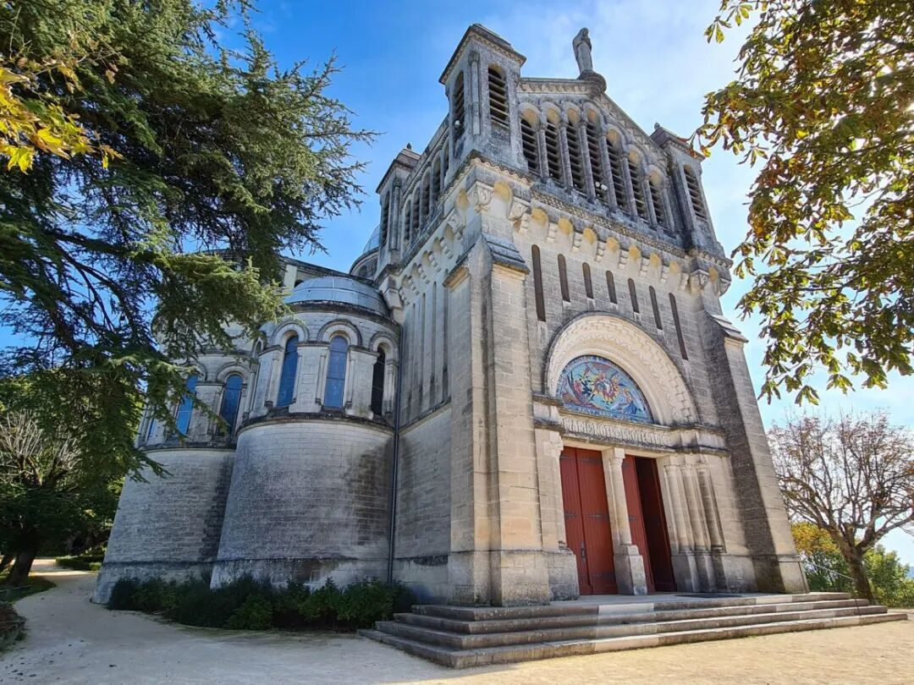
佩拉古德圣母大教堂
Basilique
Notre-Dame
de Peyragude
©Guide du Lot-et-Garonne
而这座大教堂也流传着神秘而童话般的传说，大约在公元1000年，一位牧羊女在放牧回家的路上饥肠辘辘，恰好碰见了神秘人相助，找到了面包果腹，而这位好心人正是显灵的圣母玛利亚。而百年后的一场瘟疫肆虐时，村子安然无恙，于是人们愈发相信是圣母在庇护这里。
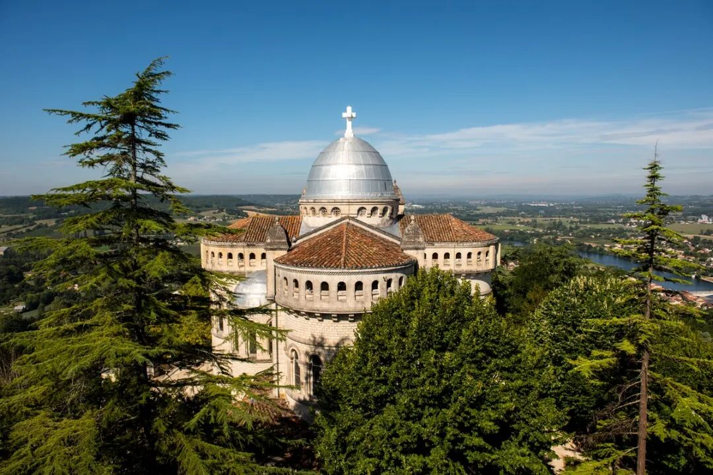
©Tourisme Fumel
19世纪末，一座拜占庭风格的大教堂拔地而起，整个建筑工期历时50年之久，是献给圣母的宏伟建筑，内部的主殿宽敞而高大，顶部装饰着精美的玻璃彩窗而绘画。
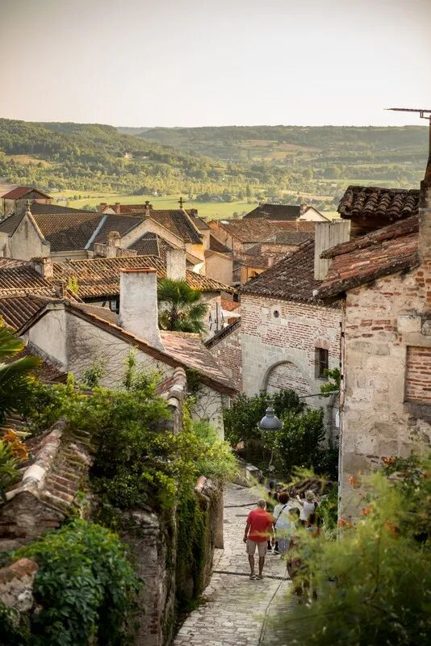
©Tourisme Fumel
岁月流转，
村庄依旧守望着往日的荣耀，
仿佛还能听到朝圣者们虔诚的脚步声，
回荡在静谧的街巷间。
普拉茨德莫洛-
拉普雷斯特
Prats-de-Mollo-la-Preste
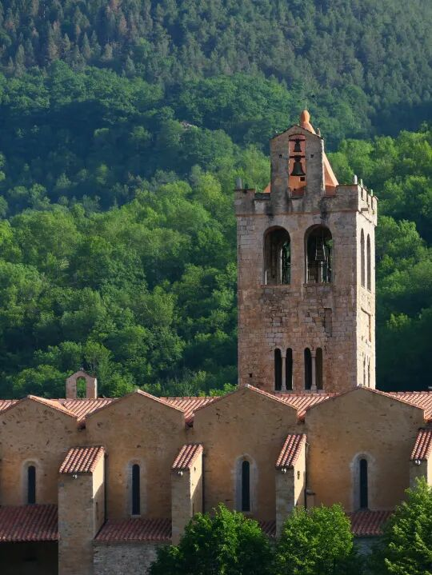
©iStock-Yvan Tessier
地处法国与西班牙交界处的卡尼古山 (Massif du Canigou) 南麓，这座拥有千年历史的村落建于982年，13世纪到18世纪上半叶，凭借编织作坊和锻造厂逐渐繁荣发展。
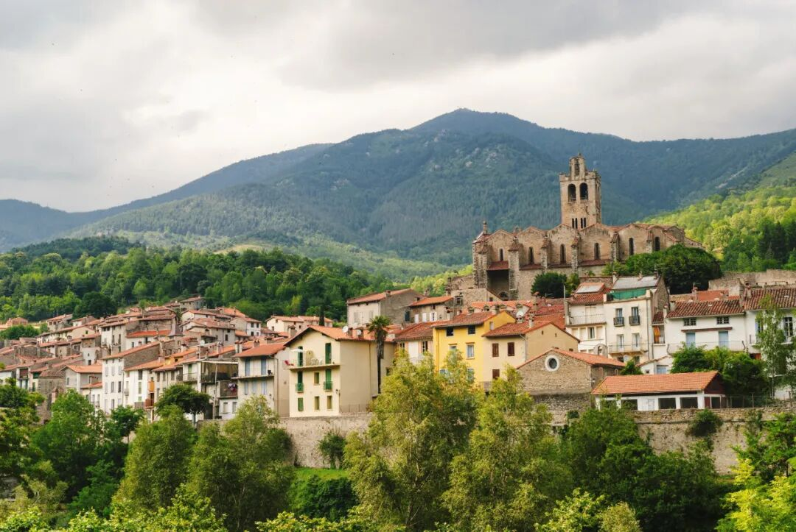
©iStock-clodio
包围着古镇的城墙从14世纪开始，便在多次摧毁与重建中徘徊，直到17世纪在沃邦的指导下重新巩固，如今的部分城墙是可以步行参观的。
山顶上的拉加德堡 (Fort Lagarde) 也是沃邦的作品，从星形的主楼结构中就可辨认，这里保留着营房，地牢和武器室，巍峨地屹立在古城的制高点。
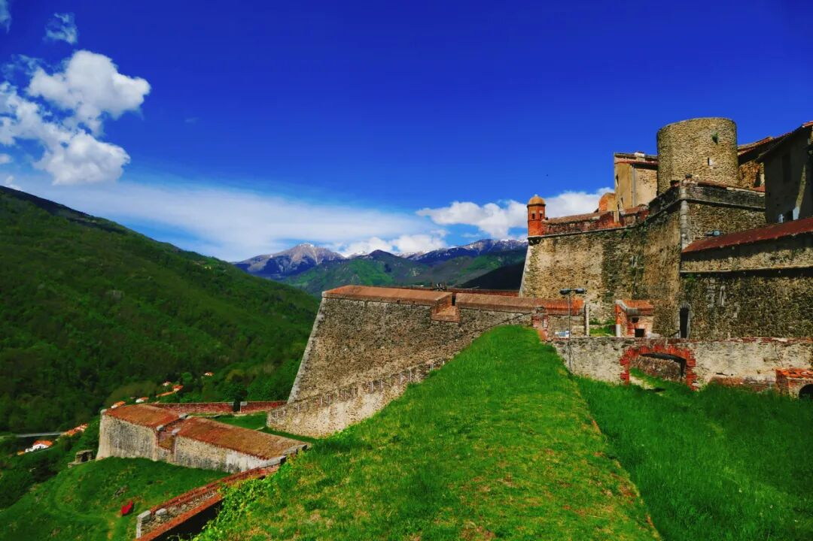
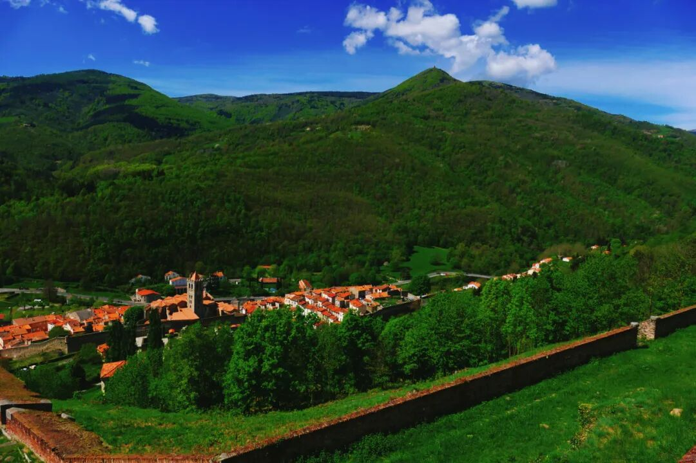
©iStock-Jannick Tessier
色彩缤纷的外墙，
朱红屋顶与青山相依，
仿佛走进了一幅淡雅山水画，
让人心旷神怡。
恭喜以上入选的小镇，咱们明年继续期待~


法小旅的官网有更多精彩消息